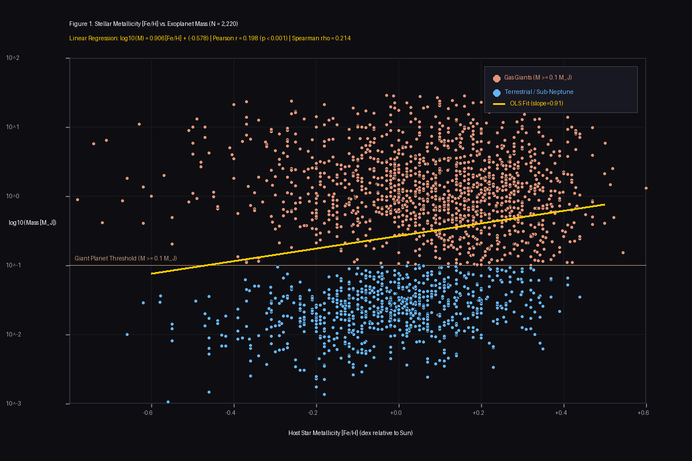
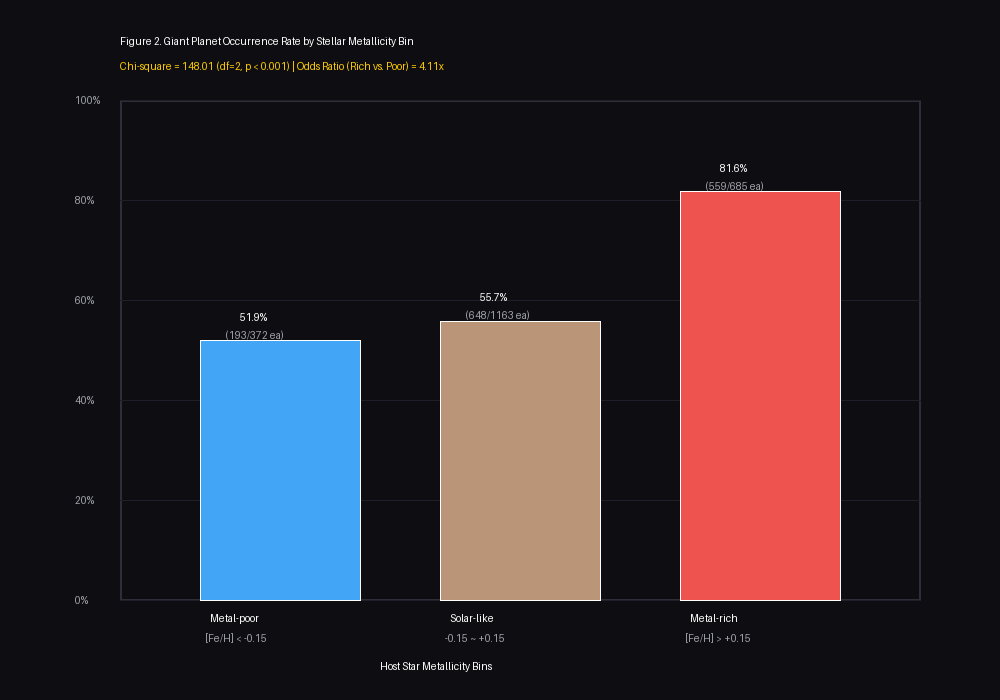

NASA 외계행성 아카이브 검증 데이터 (N = 2,220)
모항성 금속함량([Fe/H])과 행성 질량(목성질량 $M_J$) 간의 통계적 상관성
PEARSON CORRELATION
r = 0.198
p < 0.001 (유의수준 99.9% 초과)
SPEARMAN RANK RHO
ρ = 0.214
비모수적 순위 강한 정적 상관
GIANT PLANET ODDS RATIO
4.11배
부유금속군 vs 빈금속군 승산비
금속함량 구간별 거대 가스행성 출현율 비교 (3개 군)
빈금속 항성 ([Fe/H] < -0.15)
51.88% (193/372)
태양 유사 항성 (-0.15 <= [Fe/H] <= +0.15)
55.72% (648/1163)
부유 금속 항성 ([Fe/H] > +0.15)
81.61% (559/685)
그림 1. 금속함량 vs 행성 질량 산점도

그림 2. 구간별 거대행성 출현율
